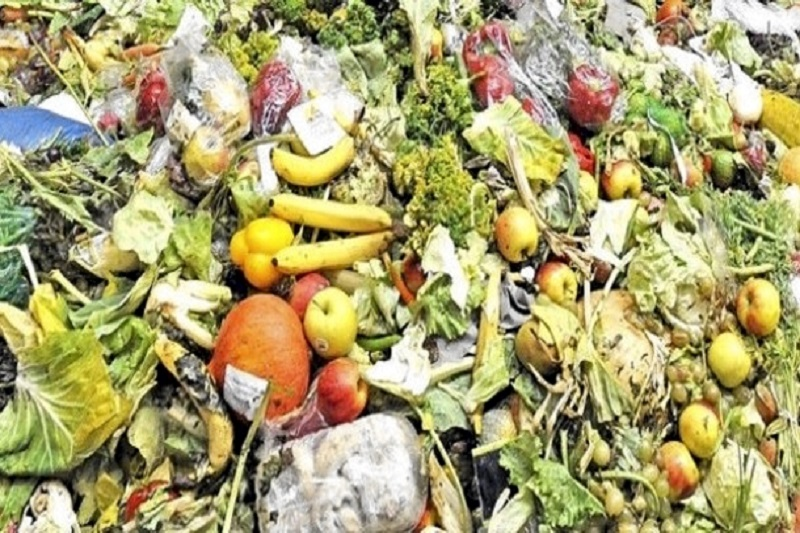

<!DOCTYPE html>
<html lang="en">
  <head>
    <meta charset="UTF-8" />
    <meta http-equiv="X-UA-Compatible" content="IE=edge" />
    <meta name="viewport" content="width=device-width, initial-scale=1.0" />
    <title>Document</title>
  </head>
  <body></body>
</html>
<!DOCTYPE html>
<html lang="en">
  <head>
    <meta charset="UTF-8" />
    <meta http-equiv="X-UA-Compatible" content="IE=edge" />
    <meta name="viewport" content="width=device-width, initial-scale=1.0" />

    <!-- Font Awesome -->
    <script
      src="https://kit.fontawesome.com/599b966433.js"
      crossorigin="anonymous"
    ></script>

    <!-- Css Files -->
    <link rel="stylesheet" href="styles/navbar.css" />
    <link rel="stylesheet" href="styles/footer.css" />
    <link rel="stylesheet" href="styles/blogs.css" />

    <!-- Mobile view -->
    <link rel="stylesheet" href="styles/mobile/navbar.css" />
    <link rel="stylesheet" href="styles/mobile/blogs.css" />
    <link rel="stylesheet" href="styles/mobile/footer.css" />

    <!-- Tablet View -->
    <link rel="stylesheet" href="styles/tablet/navbar.css" />
    <link rel="stylesheet" href="styles/tablet/blogs.css" />
    <link rel="stylesheet" href="styles/tablet/footer.css" />

    <title>Blockchain-based</title>
  </head>
  <body>
    <nav></nav>
    <main>
      <div class="article">
        <div class="article-heading">
          <h1>
            Blockchain-based solutions for food safety in the agriculture
            industry
          </h1>
        </div>
        
        <div class="blog-post">
          <p style="color: var(--primary-green)">
            <span style="color: black">Published on:</span>
            April 30, 2023
            <span style="color: black; margin-left: 20px">Author: </span>Arad
            Chain
          </p>
          <p>
            The agriculture industry is one of the world's largest sectors,
            providing food for billions of people. However, the recent surge in
            foodborne illnesses and fraud have raised concerns about food
            safety. Blockchain technology has emerged as a revolutionary
            solution to tackle these issues by enhancing accountability and
            traceability throughout the agricultural supply chain.
          </p>

          <p>
            A blockchain is a distributed database that records transactions in
            a secure and transparent way. Each block in the chain contains a
            timestamp and a unique cryptographic signature, making it
            tamper-proof and irreversible. As a result, a blockchain-based
            solution for food safety can help farmers, distributors, and
            retailers to keep accurate records of their operations and products.
          </p>

          <p>
            For instance, a farmer can record the origin and quality of each
            crop on a blockchain platform during harvesting. The system can
            automate the collection of data about the environment, fertilizer,
            and water sources used in cultivation. In turn, the distributor can
            use this information to verify the authenticity and quality of the
            product before shipping it to retailers. As a result, a
            blockchain-based system can create a transparent and secure supply
            chain that helps to identify and contain outbreaks of foodborne
            illnesses.
          </p>

          <p>
            Furthermore, blockchain technology can help eliminate food fraud,
            which involves the mislabeling or substitution of food products.
            According to a report by the US Congressional Research Service, food
            fraud costs the global food industry up to $40 billion per year. By
            implementing a blockchain-based system, every actor in the supply
            chain can record and track their actions, ensuring that the product
            information is accurate and up-to-date. The immutability and
            transparency of the blockchain can expose any discrepancies or
            attempts to alter the records, alerting the stakeholders to take
            corrective measures in real-time.
          </p>

          <p>
            In addition to improving traceability and accountability, blockchain
            technology can also be used to monitor the quality of food products.
            By utilizing sensors and IoT devices, data can be collected and
            stored on the blockchain to track conditions such as temperature,
            humidity, and storage, reducing the risk of contamination and
            spoilage.
          </p>

          <p>
            AradChain has a blockchain-based solution which offers a potential
            to improve food safety and quality in the agricultural sector by
            providing a transparent and secure supply chain. By using blockchain
            technology, farmers, distributors, and retailers can enhance
            traceability, accountability, and transparency, preventing food
            fraud and reducing the risk of foodborne illnesses. With the growing
            focus on sustainability and healthy food choices, the adoption of
            blockchain technology in the agriculture industry is expected to
            increase in the coming years and AradChain is set to become a market
            standard in years to come.
          </p>

          <p>
            <a href="register.html">Click here</a> to register for AradChain’s
            ICO
          </p>
        </div>
      </div>
    </main>

    <footer></footer>

    <script src="scripts/index.js"></script>
    <script type="module">
      import navbar from "./components/navbar.js";
      const navContainer = document.querySelector("nav");
      navContainer.innerHTML = navbar();

      import footer from "./components/footer.js";
      const footerContainer = document.querySelector("footer");
      footerContainer.innerHTML = footer();
    </script>
  </body>
</html>
